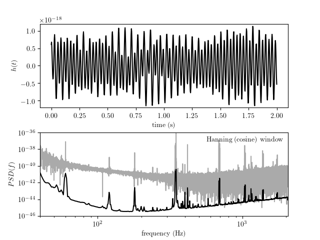

Plot the power spectrum of LIGO¶
This compares the power spectrum computed using the raw FFT, and using Welch’s method (i.e. overlapping window functions that reduce noise). The top panel shows the raw signal, which is the measurements of the change in baseline length. The bottom panel shows the raw and smoothed power spectrum, used by the LIGO team to characterize the noise of the detector. The particular data used here is the injected Big Dog event.
downloading LIGO bigdog data from http://www.astro.washington.edu/users/ivezic/DMbook/LIGO/hoft.968653908-968655956.H1.dat.gz to /home/vanderplas/astroML_data/LIGO_large.npy
Downloading http://www.astro.washington.edu/users/ivezic/DMbook/LIGO/hoft.968653908-968655956.H1.dat.gz
[= ] 2.16Mb / 86.53Mb
[== ] 4.33Mb / 86.53Mb
[=== ] 6.49Mb / 86.53Mb
[==== ] 8.65Mb / 86.53Mb
[===== ] 10.82Mb / 86.53Mb
[====== ] 12.98Mb / 86.53Mb
[======= ] 15.14Mb / 86.53Mb
[======== ] 17.31Mb / 86.53Mb
[========= ] 19.47Mb / 86.53Mb
[========== ] 21.63Mb / 86.53Mb
[=========== ] 23.80Mb / 86.53Mb
[============ ] 25.96Mb / 86.53Mb
[============= ] 28.12Mb / 86.53Mb
[============== ] 30.29Mb / 86.53Mb
[=============== ] 32.45Mb / 86.53Mb
[================ ] 34.61Mb / 86.53Mb
[================= ] 36.78Mb / 86.53Mb
[================== ] 38.94Mb / 86.53Mb
[=================== ] 41.10Mb / 86.53Mb
[==================== ] 43.26Mb / 86.53Mb
[===================== ] 45.43Mb / 86.53Mb
[====================== ] 47.59Mb / 86.53Mb
[======================= ] 49.75Mb / 86.53Mb
[======================== ] 51.92Mb / 86.53Mb
[========================= ] 54.08Mb / 86.53Mb
[========================== ] 56.24Mb / 86.53Mb
[=========================== ] 58.41Mb / 86.53Mb
[============================ ] 60.57Mb / 86.53Mb
[============================= ] 62.73Mb / 86.53Mb
[============================== ] 64.90Mb / 86.53Mb
[=============================== ] 67.06Mb / 86.53Mb
[================================ ] 69.22Mb / 86.53Mb
[================================= ] 71.39Mb / 86.53Mb
[================================== ] 73.55Mb / 86.53Mb
[=================================== ] 75.71Mb / 86.53Mb
[==================================== ] 77.88Mb / 86.53Mb
[===================================== ] 80.04Mb / 86.53Mb
[====================================== ] 82.20Mb / 86.53Mb
[=======================================] 84.37Mb / 86.53Mb
[========================================] 86.53Mb / 86.53Mb
[=========================================] 86.53Mb / 86.53Mb
uncompressing file...
# Author: Jake VanderPlas <vanderplas@astro.washington.edu>
# License: BSD
# The figure is an example from astroML: see http://astroML.github.com
import numpy as np
from matplotlib import pyplot as plt
from scipy import fftpack
from matplotlib import mlab
from astroML.datasets import fetch_LIGO_large
#------------------------------------------------------------
# Fetch the LIGO hanford data
data, dt = fetch_LIGO_large()
# subset of the data to plot
t0 = 646
T = 2
tplot = dt * np.arange(T * 4096)
dplot = data[4096 * t0: 4096 * (t0 + T)]
tplot = tplot[::10]
dplot = dplot[::10]
fmin = 40
fmax = 2060
#------------------------------------------------------------
# compute PSD using simple FFT
N = len(data)
df = 1. / (N * dt)
PSD = abs(dt * fftpack.fft(data)[:N / 2]) ** 2
f = df * np.arange(N / 2)
cutoff = ((f >= fmin) & (f <= fmax))
f = f[cutoff]
PSD = PSD[cutoff]
f = f[::100]
PSD = PSD[::100]
#------------------------------------------------------------
# compute PSD using Welch's method -- hanning window function
PSDW2, fW2 = mlab.psd(data, NFFT=4096, Fs=1. / dt,
window=mlab.window_hanning, noverlap=2048)
dfW2 = fW2[1] - fW2[0]
cutoff = (fW2 >= fmin) & (fW2 <= fmax)
fW2 = fW2[cutoff]
PSDW2 = PSDW2[cutoff]
#------------------------------------------------------------
# Plot the data
fig = plt.figure()
fig.subplots_adjust(bottom=0.1, top=0.9, hspace=0.3)
# top panel: time series
ax = fig.add_subplot(211)
ax.plot(tplot, dplot, '-k')
ax.set_xlabel('time (s)')
ax.set_ylabel('$h(t)$')
ax.set_ylim(-1.2E-18, 1.2E-18)
# bottom panel: hanning window
ax = fig.add_subplot(212)
ax.loglog(f, PSD, '-', c='#AAAAAA')
ax.loglog(fW2, PSDW2, '-k')
ax.text(0.98, 0.95, "Hanning (cosine) window",
ha='right', va='top', transform=ax.transAxes)
ax.set_xlabel('frequency (Hz)')
ax.set_ylabel(r'$PSD(f)$')
ax.set_xlim(40, 2060)
ax.set_ylim(1E-46, 1E-36)
ax.yaxis.set_major_locator(plt.LogLocator(base=100))
plt.show()